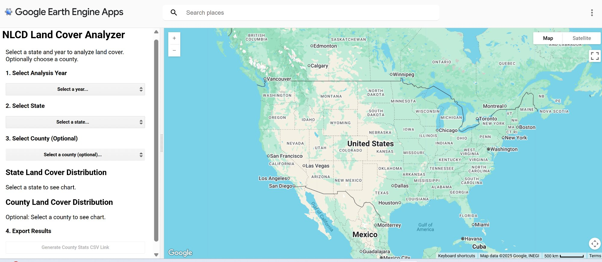
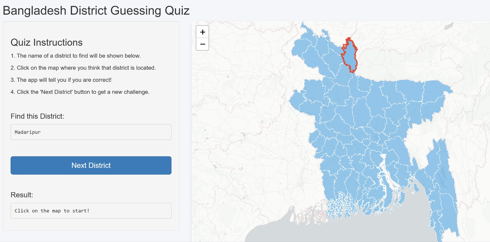
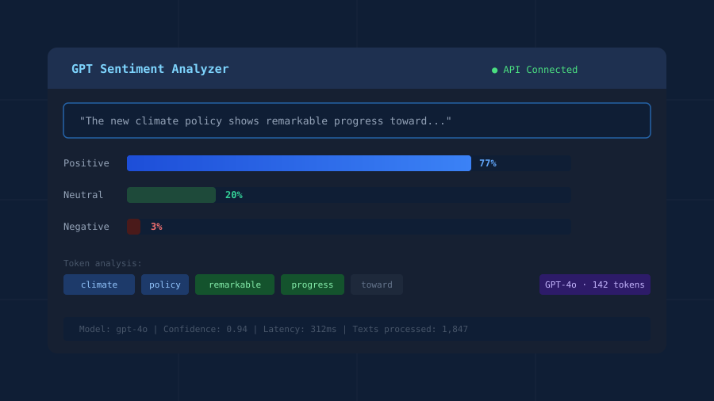
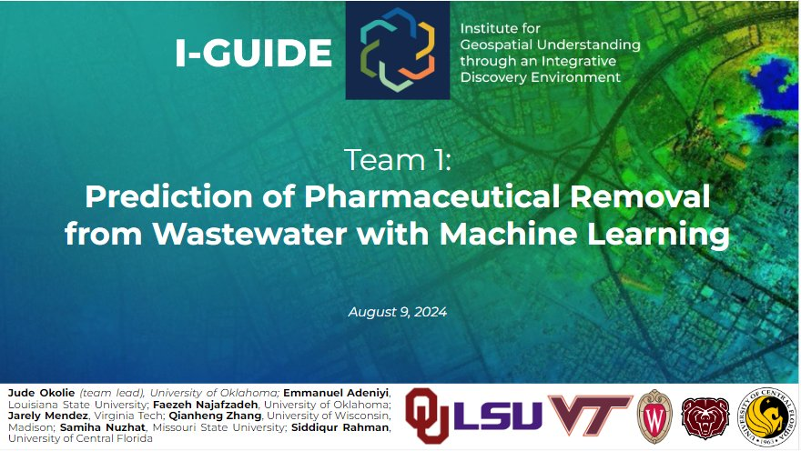

Geospatial Data Scientist specializing in multihazard risk assessment, power grid reliability, and climate extremes — leveraging big data and machine learning to advance environmental research and resilience.
I am a PhD candidate in the Department of Civil, Environmental, and Construction Engineering at the University of Central Florida. My research lies at the intersection of climate science, geospatial data analysis, and infrastructure resilience.
Before joining UCF, I completed my Master's in Geography at the University of Alabama, where I developed expertise in spatial statistics and environmental data analysis.
My current work, part of a DOE-funded project (CARES), applies big data analytics and deep learning to model power outages caused by compound extreme weather events in Florida — with direct implications for grid resilience and socially vulnerable communities.
Outside of research, I enjoy badminton, following tech developments, and contributing to open-source geospatial tools.
Core Competencies

Python toolkit for analyzing and visualizing raster datasets in geospatial research workflows.


NLP pipeline for analyzing text sentiment using OpenAI's GPT API and custom classification logic.

ML model predicting pharmaceutical compound removal from wastewater treatment systems.
Interested in collaboration, have questions about my research, or want to explore opportunities in geospatial data science and climate resilience? I'd love to hear from you.
I'm open to research collaborations, conference presentations, and consulting related to environmental hazards and infrastructure resilience.
Connect Online